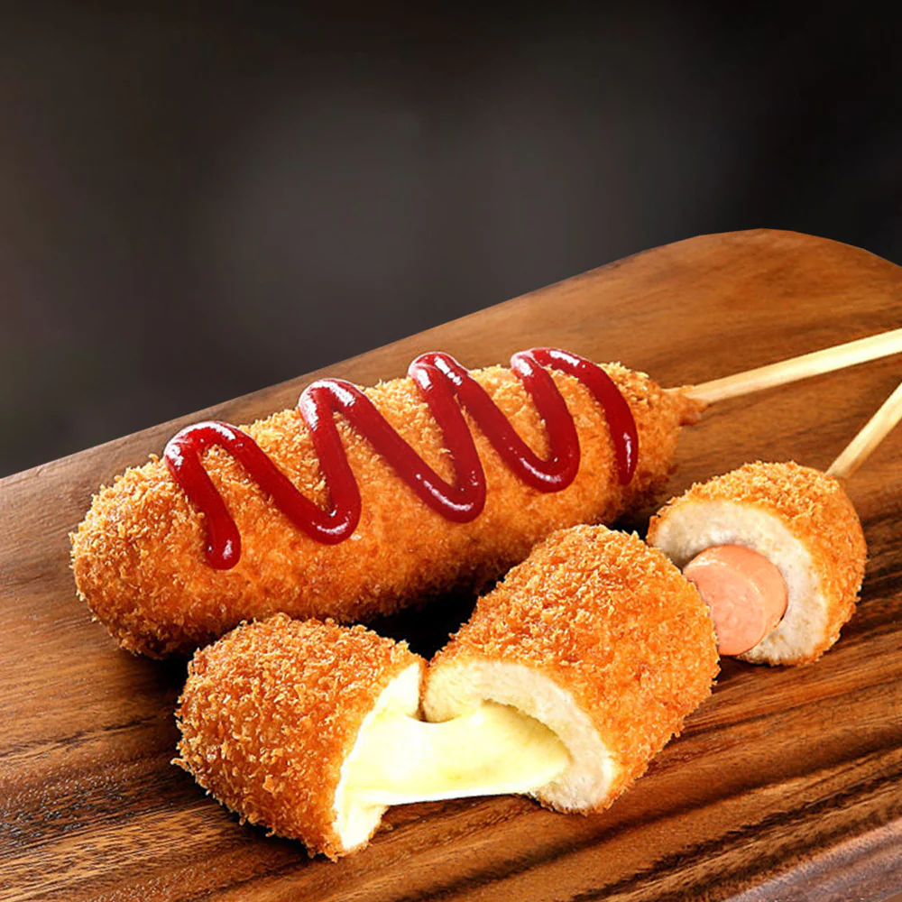

Korean Street Cheese Corn Dogs Recipe

Description
This delicious street food from South Korea is much easier to make than you would actually think and so delicious!
What are you waiting for! Let's start!
Ingredients
- Flour
- Baking powder
- Salt
- Sugar
- Egg
- Milk
- Cheese sticks
- Bread crumbs
- Frying oil
- Sugar
- Ketchup
- Mustard
Steps
- In a mixing bowl, whisk flour, baking powder, salt and sugar.
- Make a little well in the middle and add egg and milk. Mix everything together until smooth. Pour batter into a long glass and keep it in a fridge until ready to use.
- Skewer cheese sticks into bamboo or wooden skewers. Dust with flour and place in a freezer at least 5 minutes to 10 minutes.
- It is very important to keep everything cold, otherwise, the cheese will leak out to the oil.
- Heat frying oil to 350°F. Dip and coat skewered cheese sticks with the cold batter. Make sure to cover all around. Now, lightly and quickly coat with panko bread crumbs then carefully place into frying oil.
- Fry for 5 minutes or until golden brown out side. Remove form oil, place on a cooling rack or paper towel lined baking sheet.
- Spread sugar on a small baking sheet or a large plate. Roll cheese corn dogs on sugar to evenly coat while it’s still hot. This is what makes Korean corn dog so special, so do not miss out!!
- Enjoy with ketchup and honey mustard as Korean street vendors serve!
Happy cooking!
Other Recipes